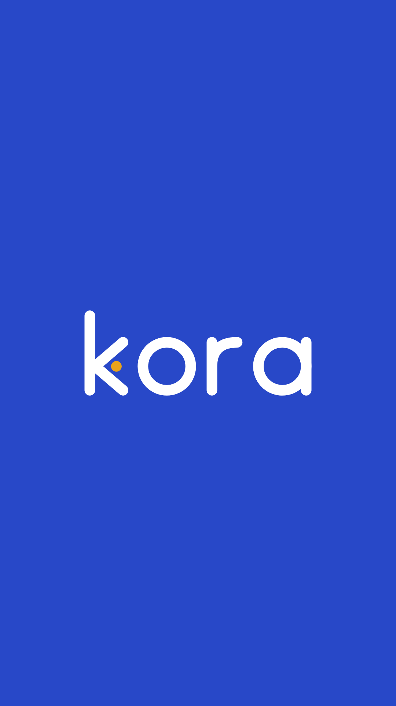
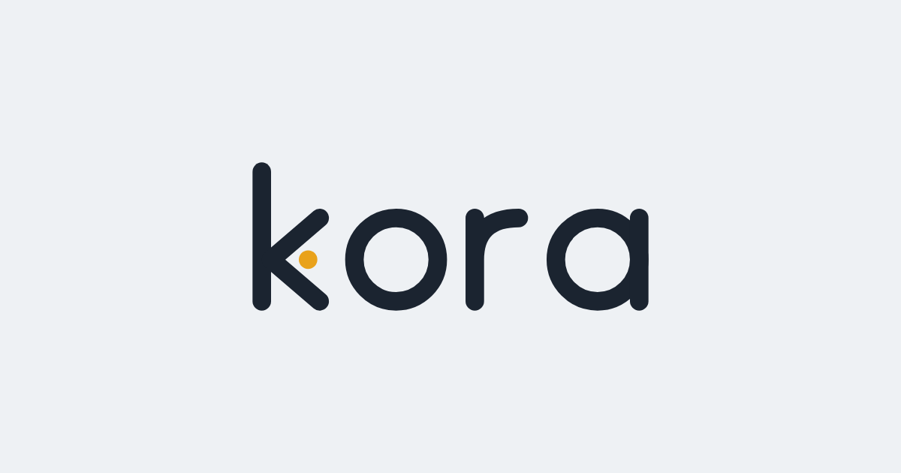
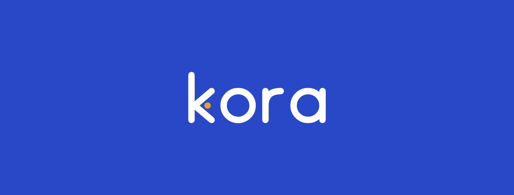
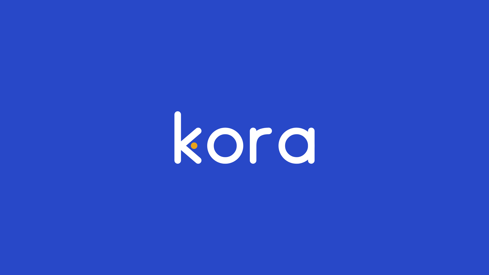
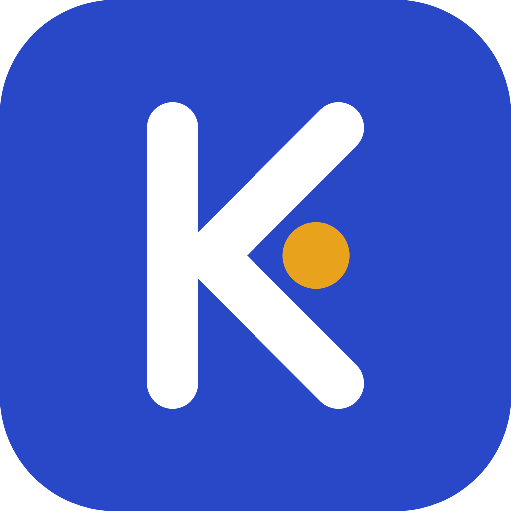

Kora
Os braços do K formam o sinal de responder (<), e o ponto âmbar é a mensagem que chega. Traço único, pontas arredondadas: amigável, mas firme.
Assinatura e símbolo
A assinatura é a versão principal. O símbolo sozinho serve para avatar, ícone e favicon.
Ícone de app
Para a tela inicial do celular, a loja de apps e a foto de perfil.
Teste de tamanho
O símbolo precisa continuar legível em 16 px, o tamanho do ícone na aba do navegador.
Cores
As mesmas do painel. O âmbar aparece só no ponto, para não perder força.
Ações e ícone
Textos e assinatura
Só o ponto
Fundos
Alternativa para comparar
Escolha qual direção seguir. A recomendada é a A.
K com seta de responder e ponto da mensagem. Funciona sozinho como símbolo.
O "o" vira um balão de conversa. É mais literal, o "o" com cauda pode ser lido como "p" ("kpra") e o símbolo sozinho fica mais fraco.
Arquivos em PNG
Prontos para as redes. Para gerar de novo depois de mudar algo nos SVGs: node scripts/export-brand-png.mjs

Instagram, WhatsApp, Facebook, TikTok Post claro1080 × 1080 Post escuro1080 × 1080



Story e Reels1080 × 1920

Prévia de link1200 × 630WhatsApp, sites Capa LinkedIn1584 × 396



Capa Facebook1640 × 624

Capa YouTube2560 × 1440 Logo escuro2000 × 900
Fundo transparente


Logo branco2000 × 900Fundo transparente Símbolo escuro1024 × 1024

Transparente Símbolo branco1024 × 1024

Transparente


Ícone de app1024 e 512 px Ícone iPhone180 × 180
Favicons 16, 32 e 48 na pasta
Regras de uso
- Deixe em volta da assinatura um espaço livre do tamanho da altura do "o".
- Tamanho mínimo: símbolo com 16 px; assinatura com 24 px de altura.
- Não troque a cor do ponto, não aplique sombra nem contorno e não distorça.
- Em fundo de foto, use o ícone de app (com o quadrado azul).